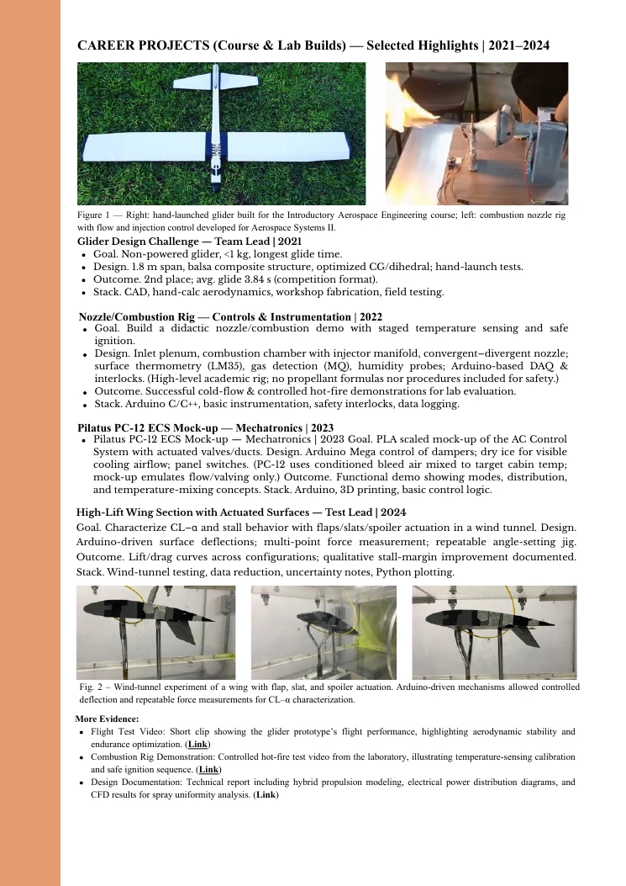
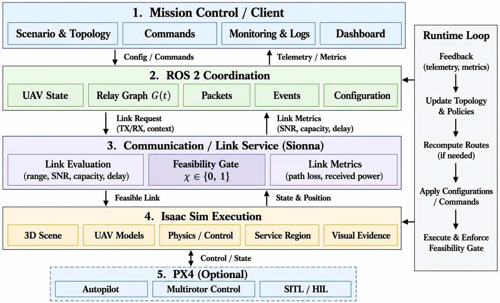
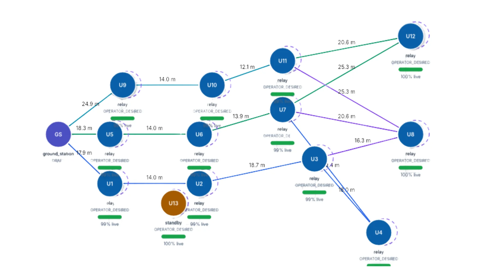
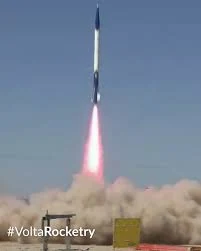
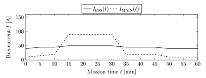
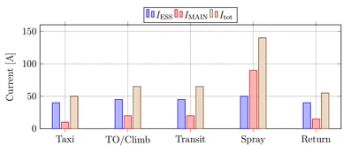
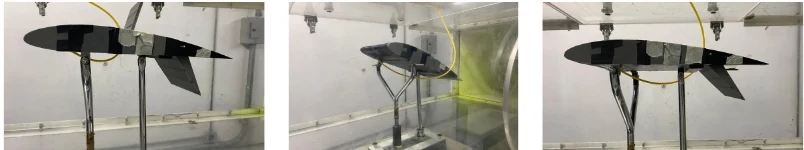

ATMOS — Autonomy Testbed for Multi-purpose Orbiting Systems
Free-flying spacecraft testbed for autonomous space-systems research, simulation and hardware validation.
View project ↗
Project cards open into concise engineering case studies. Visuals are individual source assets — hardware photos, plots, architecture diagrams and experimental figures — rather than screenshots of portfolio pages.
Free-flying spacecraft testbed for autonomous space-systems research, simulation and hardware validation.
View project ↗Integrated multi-UAV simulation environment coupling robotics, network feasibility, topology and fault recovery.
View project ↗
Payload, sensing and telemetry integration with flight-data reconstruction for a 10k COTS rocket.
View project ↗
Propulsion / electrical integration for the JACAMAR fixed-wing competition aircraft; 14th of 110 teams.
View project ↗
Conceptual electrical, power-distribution and autonomous spray-system architecture for an agricultural aircraft.
View project ↗
Canard glider design, combustion / nozzle testing, Pilatus PC-12 systems modeling and aerodynamic experimentation.
View projects ↗
ATMOS is a free-flying spacecraft testbed used to evaluate autonomy, software integration and hardware behavior before flight. My contribution focused on the surrounding simulation / experiment ecosystem rather than redesigning the vehicle itself.
Supported repository-level integration, ROS 2/Gazebo/PX4 simulation, motion-capture interfaces, IoT instrumentation and simulation-to-hardware validation workflows.


ROS 2 / PX4 / Isaac Sim / Sionna framework for reproducible swarm-of-drones and Swarm-Network-as-a-Service experiments. The system makes network feasibility part of mission execution and supports topology changes, UAV failures, standby-node integration and telemetry.



Integrated payload, sensing and telemetry subsystems and supported flight-data acquisition, environmental checks, launch operations and post-flight trajectory reconstruction for aerodynamic and performance analysis.


Worked on propeller–motor–battery matching, electrical architecture, ground testing and competition readiness for the fixed-wing DBF aircraft. The team qualified and flew at Wichita, finishing 14th of 110 teams worldwide.


Developed a conceptual electrical / electronic architecture and spray-system power analysis for an autonomous agricultural aircraft, including load distribution, mission power demand, battery / generator considerations and GNSS/autopilot-oriented rate-control requirements.


Aerodynamic sizing, stability, mass distribution, fabrication and flight testing of a non-powered canard aircraft.
Instrumented nozzle / combustion experiment with sensing, safety interlocks and controlled testing.
Functional / conceptual aircraft-systems mock-up used to study electrical / mechatronic subsystem behavior.
ANSYS-based aerodynamic simulations and experimental airfoil / high-lift studies.


